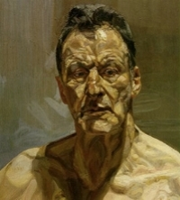

Pourpre.com expose un
excellent exemple concret en nous prouvant que la tomate est
noire. Oui, noire, la tomate est noire, c'est comme ça. Et elle est
rouge aussi, tantôt rouge, tantôt noire en fonction de l'éclairage,
bien que ce soit toujours la même tomate. Si l'on n'avait pas
conscience de l'éclairage, reconnaîtrions-nous notre tomate ?
Pour se limiter à une intention
artistique tendant vers une forme de réalisme - sans oublier que
les maîtres modernes, fin XIXème siècle / début XXème,
ont transformé les couleurs très radicalement sans pour autant rendre la réalité méconnaissable -, on peut difficilement
concevoir en peinture une "carnation"
indépendamment de son contexte à moins d'en venir à des
représentations strictement symboliques ou au service d'une narration.
Bref, une peau bronzée, d'accord,
mais où, éclairée par quoi et comment ? C'est une forêt de possibilités ne
serait-ce que, avant même de parler de transpositions irréelles, parce qu'aucune personne ne reste tout le temps éclairée
de la même manière. La question de la couleur des ombres, à elle
seule, rend difficile un traitement univoque. Pourtant elle est
cruciale car c'est dans l'ombre que vous pouvez suggérer le mieux
l'atmosphère environnante.
Ensuite il faut observer ou imaginer
toutes les nuances que renvoie la peau éclairée.
En peinture à l'huile, en travaillant
alla prima
on peut facilement employer une quinzaine de pigments différents sur
la surface d'une carnation. On s'en rend bien compte chez
certains artistes qui rendent cela sensible. Lucian Freud par exemple,
outrait un peu ce propos pictural pour obtenir un superbe effet de
"cru".

C'est souvent la touche qui rend ce
propos pictural plus ou moins lisible. En regardant bien un tableau de
Rembrandt, c'est la même évidence : beaucoup de pigments
différents. Pour ces
deux peintres et beaucoup d'autres, il n'existe pas UNE couleur de la
peau. C'est cette constatation qui pousse l'artiste à trouver les
moyens d'exprimer avec puissance et subtilité sa perception d'un
phénomène physique.
Rude tâche. Ces questions très
difficiles se sont déjà posées aux artistes du Fayoum, il n'y a pas
loin de 2 000 ans. Une chose est sûre : vous posez la bonne question !
Pourquoi ne pas essayer d'abord
d'imaginer pour vos personnages différents contextes lumineux
assez précis et faire
des essais ? Beaucoup d'essais ! Parce que vous obtiendrez des
résultats surprenants avec des couleurs inattendues. Certains vous
suggéreront en retour des atmosphères. C'est un dialogue. Le tableau
(ou la pochade, le croquis, l'esquisse) parle à l'artiste.
Vous indiquer une couleur "standard"
serait vous priver de la joie de ces découvertes. Laissez-vous
étonner.